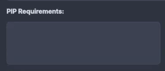
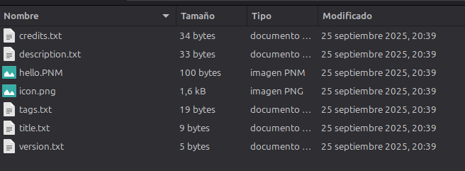
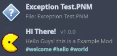

PacSnake
PacSnake
How Works A Mod 👩🏻💻
and its uses
On this page we will tell you how a Mod works and how to use it.
.PNM
(Script File)
This is the script, with all its code. This file is extremely important for Mods to work. The code must be Python.
.PNMZIP
(Storage)
All your files are to store the Description and Title, the Thumbnail and more and of course the .PNM
.PNMEXE
(Executable File - Discontinued)
A discontinued and less used form is the .PNMEXE, to run .exe for compiled mods, this is the Windows version only
Packages 📄
Packages or Libraries are collections of pre-written code used to add specific functionalities to the game's mods. They are essential for running many advanced mods.
Why are Packages Necessary?
Since PacSnake's mods are often Python-based, they rely on external libraries to handle complex tasks that aren't built into the game's core. For example:
- **Pygame:** Used by many mods to handle custom graphics, user interfaces, or specialized input (if the mod creates its own mini-game or screen).
If a mod requires a specific package, you must ensure that package is installed on your system for the mod to function correctly. The most common tool for managing these packages is **PIP (Package Installer for Python)**.
In the ModLoader
When creating mods there are *PIP Requirements* so that the mod loader is responsible for installing the necessary packages to install a mod.

Structure 🧱
The structure of the PNMZIP is vital for the mod to work correctly. You need to know how these files are organized.

Metadata Files Explained
The PNMZIP package uses several simple **.txt files** to store metadata, which helps the game properly categorize and display your mod:
List of Mods 📝
When you place a mod file into the *Mods* Folder, you'll find it listed in the PacSnake Mod Loader. The result and available features will vary depending on the file format you use.
.PNM vs .PNMZIP
The Simple Script: .PNM
The **.PNM** format is a single script file (Python). It's simple but has limitations:
- The mod's **Title** and **Description** will be automatically generated from the file name and content, with limited custom text.
- The **Thumbnail** will be set to a generic or "Unknown" icon.
The Standard Package: .PNMZIP
The **.PNMZIP** format is the current standard due to its significant advantages. It bundles all necessary files and metadata:
- **Fully Customizable Title** and **Description** via metadata files.
- Supports a **Custom Thumbnail** for better visual representation.
- Includes **Tags**, **Version**, and **Credits** metadata.
- **Advantage:** Has the ability to load different **.PNM** scripts within a single **.PNMZIP** package, allowing for more complex mod suites.

How Do You Load Mods? 💾
The process is straightforward! The system handles all the heavy lifting to ensure your mod runs quickly and safely, but the method differs slightly depending on the format.
Loading a Single Script (.PNM)
When you load a single **.PNM** file, the process is direct:
- The system reads the **.PNM** file.
- It temporarily **renames** the file's extension from `.PNM` to the executable `.py` (Python).
- The script is **executed** by the Python interpreter.
Loading a Package (.PNMZIP)
The **.PNMZIP** format uses a more robust temporary extraction system:
- The system reads the **.PNMZIP** package.
- All contents of the package are quickly **extracted** to a temporary directory (e.g., `/tmp/PacSnakeMod_uocby15p`).
- The main **.PNM** script inside the temporary folder is **renamed** to `.py`.
- The script is **executed**.
- Once the mod finishes running or the game session ends, the entire temporary directory is **deleted** to clean up the system.
Example Cleanup: Cleaned up temporary directory: /tmp/PacSnakeMod_uocby15p
Custom Assets 🖼️
Mods have the flexibility to use the **original game's assets** or introduce **entirely custom assets** like images, sounds, or custom code libraries.
How to Load Custom Assets
There are three primary methods for structuring and loading your mod's resources:
- 1. Load Assets Directly from the
.PNMZIP(Recommended) -
If your mod is packaged as a **.PNMZIP**, all assets (images, sounds, etc.) should be placed inside the ZIP file alongside the main `.PNM` script.
During the loading process, the system automatically extracts the `.PNMZIP` to a temporary directory. **Your mod script can then access these assets as if they were in a regular folder.** This is the preferred method for portability.
Example: The mod script references
'./assets/custom_icon.png', whereassetsis a folder inside the `.PNMZIP`. - 2. Self-Contained Folder (For Testing or Simple Mods)
-
You can create a separate folder **alongside a loose `.PNM` file** to hold its resources. This keeps the mod clean and portable before zipping.
Example: Create a folder named
./HiMod_Assets.Your mod script then loads the assets by referencing this folder (e.g., loading
'./HiMod_Assets/custom_image.png'). - 3. Using the Shared
Mods_AssetsFolder -
You can place your mod's resources within the shared game folder named **
Mods_Assets**.If you use this method, it's highly recommended to create a **sub-folder** named after your mod inside
Mods_Assetsto avoid conflicts with other mods.Example: Placing your resources in
/Mods_Assets/HiMod/.
**Best Practice:** Using method **1** (loading directly from the `.PNMZIP`) is the most robust way to ensure your mod's assets are always available and don't conflict with other files on the user's system.